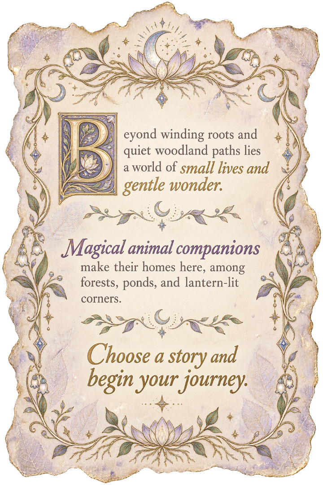

About This World
The Moonroot Wilds

Beyond winding roots and quiet woodland paths lies a world of small lives and gentle wonder.
Magical animal companions make their homes here, among forests, ponds, and lantern-lit corners.
Choose a story and begin your journey.
Kept by the Book Keeper